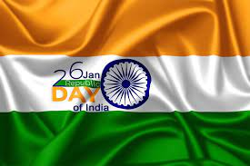

Every year on the eve of Republic Day, the President of the country addresses the nation at 7 pm onwards. The President's address is broadcasted on the entire national network of All India Radio (AIR) and telecasted over all channels of Doordarshan in Hindi followed by the English version. Broadcast of the address in Hindi and English on Doordarshan is also followed by broadcast in regional languages. The main celebration of the Republic Day is held in the national capital Delhi.
The President of India hoists the national flag at Rajpath after which the parade begins from the Rajpath till the India Gate. After this, many cultural programmes are held showcasing the rich and varied social, cultural heritage of the country.
On this day, Gallantry Medals / Service Medals, President’s Medals to Fire Service, Home Guards (HG) and Civil Defence (CD) personnel, Correctional Service Medals on prison personnel, President’s Police Medal are also awarded by the President. The Padma Awards, one of the highest civilian honours of India, is also announced on the eve of Republic Day. The Awards are given in three categories: Padma Vibhushan (for exceptional and distinguished service), Padma Bhushan (distinguished service of higher order) and Padma Shri (distinguished service).